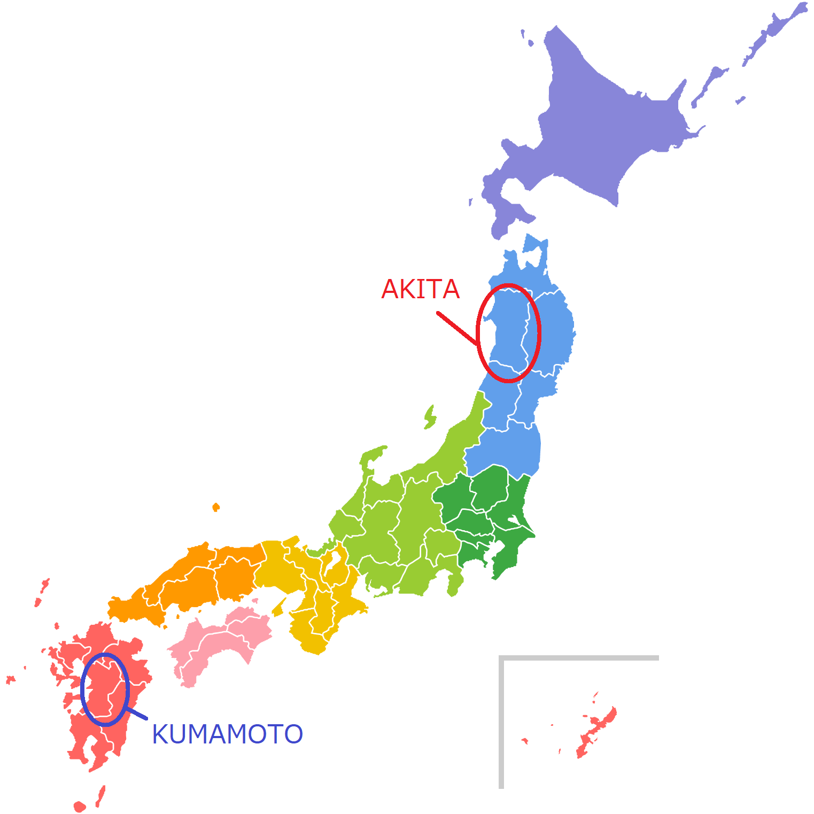

ハッチのふるさと、熊本
火の国くまもと
熊本県は、世界有数のカルデラを誇る阿蘇があることから「火の国」と呼ばれています。 その活火山から生み出された美しい山々や草原など雄大な自然・景観は、見るものを圧倒します。２０１４年に噴火が始まり、２０１５年９月には噴煙が火口から２０００メートルの高さまで上がるなど、活動が活発化しています。その翌年、２０１６年には震度６強の自身を２回も記録した熊本地震が発生。阿蘇エリアも大きな影響を受けました。阿蘇山へのドライブが恋しいです。
温泉天国
県内の各所で温泉がわき、その数は118ケ所にも及びます。 温泉に入りたくなったら、いつでもすぐに入ることができる気軽さから、熊本では、温泉のことを"おふろ"と呼ぶこともあります。なかでも「玉名温泉」「熊本温泉」はとても有名な温泉地です。
日本一有名なご当地キャラクターくまモン
２０１１年３月の九州新幹線全線開業をきっかけに生まれた熊本県のご当地キャラクター、くまモン。 お仕事はなんと公務員なのです。熊本県知事から県の営業部長兼しあわせ部長を任されている、やんちゃで好奇心いっぱいの男の子です。しゃべれないけれども、めちゃめちゃ動きます。
ハッチのおうち、秋田
あきたこまち
秋田県で誕生したお米の品種「あきたこまち」。寒さ厳しい秋田の気候に適した品種として開発されました。あきたこまちは、コシヒカリ譲りの甘味と粘り気の強さが魅力です。コシヒカリよりも甘味があっさりしているのが特徴で、和食によく合います。玄米にしてもパサつかないのは粘り気の強さのおかげです。特に私のふるさと横手市は、日中と夜の寒暖差が大きく、お米をより甘く美味しくすると言われています。
あきたいぬ
あきたいぬは大型の日本犬です。その名のとおり、秋田県の猟犬がルーツの犬種です。ハリウッド映画にもなった「忠犬ハチ公」があきたいぬだったことは有名ですよね。飼い主への忠誠心が強いことが特徴です。柴犬に見た目が似ていますが、体重は５－6倍もあり大型犬になります。戦時中に軍用犬との交配により誕生した秋田犬をルーツとする犬種が、戦後アメリカに渡りさらに改良され、『アメリカン・アキタ』として海外でも愛されるようになりました。
大曲の花火
毎年大曲雄物川河川敷運動公園にて開催される「全国花火競技大会」は、秋田が誇る日本一の花火大会です。はっきり言って、これを見に行く以外、秋田に行く理由がないです。技術や実績を認められた全国の一流の花火師たちが、頂点を目指して腕を競います。大曲地区の人口は約４万人弱だが、２０１９年の第９３回大会には、その約１９倍となる約７５万人が訪れました。音楽にあわせて、約２時間半、１万８０００発もの花火が打ち上げられる、圧巻の花火大会です。人生で一度は見てほしい、心臓が揺さぶられるほどの感動を味わってほしいです。
